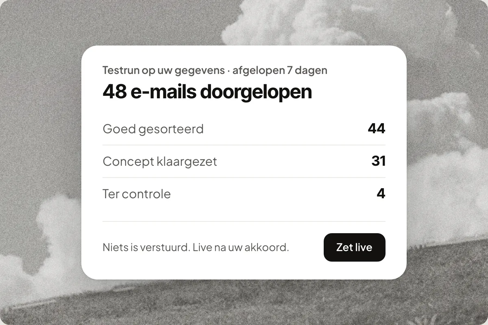
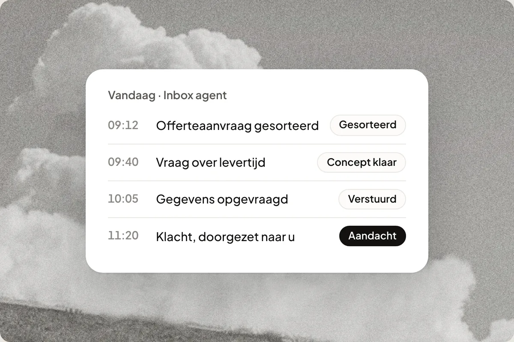

Nooit meer een klant die wacht
Een mail die blijft liggen, een oproep die niemand opneemt. Uw klant belt de volgende. Uw Support Agent neemt op en zet het antwoord klaar, op e-mail, telefoon, WhatsApp en Instagram. Ook om 22:00, ook op zaterdag. U leest mee en verstuurt wanneer het u uitkomt.
Hoor hem aan het werk
Vier voorbeeldgesprekken, ingesproken met de stem van uw Support Agent.
Probeer het zelf
Bel of chat met de Support Agent van Mowi. Maximaal twee minuten, geen account nodig.
Mowi's eigen Support Agent
Vraag wat u wilt over Mowi, of test hoe een gesprek aanvoelt.
U spreekt met de digitale assistent van Mowi, in een demo op onze website. Waarmee kan ik u helpen?
U spreekt met een AI-assistent, niet met een medewerker.
Verbinden…
Dat was de demo
Wilt u zien wat hij voor uw eigen bedrijf doet, op uw eigen kennis en systemen?
En dit is wat hij intussen doet
Geen script, maar een workflow die u zelf kunt aanpassen. Sleep eraan.
Vier momenten waarop u nu een klant kwijtraakt
Niet omdat u slecht werk levert. Omdat u er op dat moment niet bij kunt.
| Nu | Met uw Support Agent |
|---|---|
| Dinsdag 17:40. U staat bij een klant en de telefoon gaat. Voicemail. De beller probeert de volgende. | Hij neemt op, beantwoordt de vraag uit uw eigen website en plant de afspraak in. De samenvatting staat na afloop in uw dashboard. |
| Vrijdag 21:15. Een offerteaanvraag komt binnen zonder adres of maten. U ziet hem maandag. De klant heeft dan al drie andere offertes. | Hij vraagt de ontbrekende gegevens zelf op en zet het antwoord klaar. Maandag leest u het na en verstuurt. |
| Zaterdag 10:30. Een klant appt of de bestelling al onderweg is. Niemand kijkt naar de zakelijke WhatsApp. Zondag vraagt hij het nog eens, kortaf. | Hij zoekt de bestelling op in uw webshop en zet het antwoord klaar. U verstuurt met één tik vanaf uw telefoon, of laat hem dat zelf doen zodra u dat aanzet. |
| Woensdag 20:10. Een DM op Instagram: hebben jullie dit nog op voorraad? U ziet hem twee dagen later, tussen de likes. | Hij leest elk bericht, zoekt het antwoord op in uw kennisbank of webshop en zet het klaar. Geen tweede inbox meer die u vergeet. |
Eén medewerker voor alle vier de kanalen
Niet vier losse tools. Eén Support Agent met één geheugen en één kennisbank. Eén medewerker voor alle vier de kanalen.
Sorteert elke mail in de juiste map en zet het antwoord klaar. Ook de aanvraag van vrijdagavond. U leest na en verstuurt.
Meer over e-mail →Telefoon
Neemt op als u niet kunt. Beantwoordt vragen uit uw eigen website, plant de afspraak in of legt een terugbelverzoek vast. U belt terug wanneer het u uitkomt.
Meer over telefoon →Leest elk bericht op uw zakelijke WhatsApp en zet het antwoord klaar, vanuit dezelfde kennisbank als uw mail. U verstuurt met één tik, of laat hem dat zelf doen zodra u dat aanzet.
Berichten op Instagram krijgen hetzelfde antwoord als een mail, in dezelfde toon. Geen tweede inbox die u vergeet.
Hij antwoordt uit uw eigen systemen, niet uit een gok
Gekoppeld aan uw webshop, agenda, CRM of boekhouding zegt hij "uw bestelling is gisteren verzonden" in plaats van "ik kom er bij u op terug".


Mowi werkt onder meer samen met WooCommerce, Shopify, Lightspeed, Shopware, Magento, bol.com, PrestaShop, Exact Online, Pipedrive, HubSpot, Moneybird, Google Agenda, Calendly en Guestplan.
Hij wacht niet tot u het vraagt
Een goede medewerker meldt zich zelf als er iets misgaat. Deze ook.
Terugbelverzoek opvolgen
Noteert een beller een terugbelverzoek, dan zoekt hij de klant op in uw CRM en meldt het u meteen, met dossier erbij.
Retour-alarm
Een melding bij elke terugbetaling, op het moment zelf. Niet pas als u de maandcijfers bekijkt.
Bestelling blijft liggen
Betaald, maar na drie dagen nog niet verzonden? Hij meldt het voordat de klant erover belt.
Gemiste oproepen
Belandt een beller toch op voicemail of valt een gesprek weg, dan weet u het direct. Geen klant tussen wal en schip.
Eerst zien. Dan pas live.
Test hem op uw laatste 20 e-mails voordat er iets gebeurt. Er wordt niets verstuurd of verplaatst, u ziet precies wat hij zou doen. De telefoon test u eerst zelf, vanuit uw browser. Pas na uw akkoord gaat hij live. En ook dan blijft elk antwoord een concept dat u zelf verstuurt, tot u per onderwerp zegt dat hij het zelf mag.

U ziet precies wat er gedaan is
Elke oproep en elk antwoord staat in uw dashboard, met wat er gezegd is en wanneer. Vraagt iets om aandacht, dan ziet u dat meteen. Geen zwarte doos, geen verrassingen achteraf.

Drie dingen die u wilt weten voordat u begint
Wat als het fout gaat?
Valt een koppeling weg of loopt iets technisch vast, dan krijgt u een melding. Een antwoord dat technisch klopt maar inhoudelijk niet, vangt hij niet. Daarom leest u de concepten mee, en daarom verstuurt hij pas zelf als u dat per onderwerp aanzet.
Wat als mijn tegoed op is?
Dan pauzeert hij netjes en krijgt u een seintje. Geen rekening achteraf, geen automatische overstap naar betaald. U vult aan wanneer u wilt.
Waar blijft mijn data?
Uw gegevens worden niet gebruikt om AI te trainen. Wie er wél bij kan, staat per naam op onze pagina met subverwerkers.
Begin vandaag, betaal naar gebruik
Start met 60 gratis credits, zonder betaalgegevens en zonder tijdslimiet. Daarna Basis vanaf €19 per maand, excl. btw. Eén mail is één credit, een belminuut zes. Maandelijks opzegbaar.